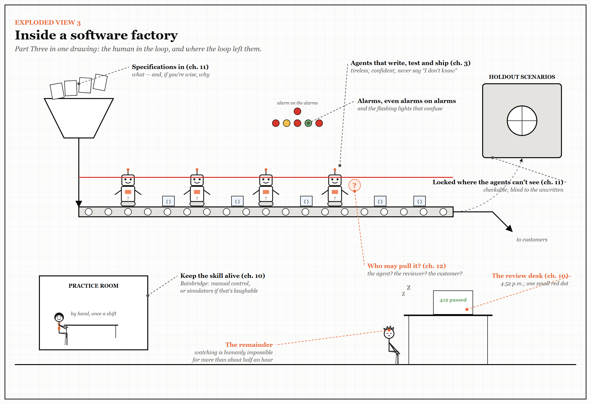

Exploded View 3 — Inside a Software Factory
Part Three in one drawing. Every label points to something you have already met; look closely for the small jokes.

Part Three put the human back into the loop — and asked what the loop had done to them. Follow the work from left to right.
- The hopper takes specifications in (Chapter 11): what to build, and — if you are wise — why.
- The agents write, test and ship, tirelessly (Chapter 3). The locked vault on the right holds the holdout scenarios that judge their work, where the agents cannot see them: checkable, but blind to anything nobody wrote down.
- The red line above the conveyor is a stop cord. Nobody has decided who may pull it (Chapter 12).
- The review desk is Bainbridge’s impossible task: 412 checks passed, one small red dot, and a reviewer who stopped being able to watch some hours ago (Chapter 10).
- The practice room, bottom left, is the cheapest safety device in the building: someone doing the work by hand, on purpose, so the skill is there on the day it is needed.